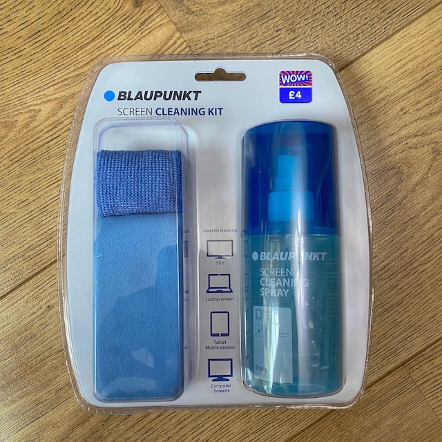

Blaupunkt Screen Cleaning Spray Review
2/7/2020
Introduction
We purchase this bottle of Blaupunkt Cleaning Spray with 2 microfibre cloths, this set cost £4 from B&M retail. As you know, tech gadgets such as phones, tablets and laptops attracts finger prints to their screens. With the new antiglare and fragile screens nowadays, having a good screen cleaning spray is much better than using wet wipes and lens cleaner as it won’t dry out when you need it! Here’s what we think!
.jpg)
Brand
At first, we were skeptical of this brand. After a quick search online, we found it was a German loved brand with 4.3 on Flipkart. With some further searching, they manufacture a lot of different items with their main seller being B&M in the UK. The 3 in 1 item came in a tightly sealed plastic packaging.
How to Use?
Subsequently, we read through the suggested instruction of spraying into the cloth before applying to the surface that require cleaning. With 1 squirt and 1 wipe, the fingerprints and and the dust was GONE! To our surprise, this worked brilliantly on our tablet that we use for games and media consumption! With its alcohol based spray, it meant that there was streak free cleaning.
Extra Cleaning Cloths
The cleaning spray is paired with the 2 different cleaning cloths, one is a thicker microfibre cloth to get rid of the dirt from the screen, the other is similar to what comes with reading glasses to polish after the dirt has been removed.
Conclusion
Compared to other retailers selling the same product at £8 or purchasing other brands but with a smaller bottle, this product at £4 is a must buy to help with greasy fingerprints or dirt!